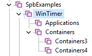
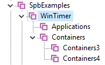

Copyright (c) Prolog
Development Center SPb
AppFrame CookBook
AppFrame. Set of Demonstration
Projects.
The list of projects that
can be built using the AppFrame template set is presented in the introduction .
For a complete list of demo
projects, see SpbExamples\Febe .
Each of the projects,
besides of the source codes, is represented by executable programs in
the SpbExamples\Febe\Bin directory .
building executable
programs is conveniently performed using the program SpbVipTools\Bin\WorkSpaceManager.exe
- data file DemoWorkSpace.wsm.

Projects should be built
using the latest commercial version of VIP.

The executable programs
represented by their UI are:
- febe_MonoMdi.exe
- febe_MonoSdi.exe
- febe_pzlMonoSdi.pzl
- febe_httpFrontendSdi.exe
- febe_httpFrontendMdi.exe
- febe_pzlHttpFrontendSdi.pzl
All programs, in terms of
the applicaion core functions of AppFrame, are completely identical,
they are
distinguished only by either the Mdi / Sdi property or the way they are
launched (programs with the .pzl extension are DLLs). Therefore, the functional
properties will be shown on the febe_MonoMdi.exe program .
First start
The first start of the
febe_MonoMdi.exe program is performed in the absence of a configuration
file, which corresponds to the start panel option - default.

The configuration of the window
field is just for the example. The bottom is used as a
MessageWindow.
Help command - calls the
empty page Help_xx.html.
About - standard information
about the application
Options - calls the dialog for
setting properties of the application
Design - calls the panel editor
for the panel
Expand - calls the dialog for
selecting the xml file for the panel extension and connects a new
ribbon
fragment
Reload - restores the panel with
all connected fragments panels
Among these commands, we
note the following three (the rest are intuitive):
Options , Expand, Reload
Options Command
The Options command in the object of the fe_Comand class
calls the
predicate fe_CoreTasks():editOptions(), which leads to the
appearance of a dialog for editing any properties of application
elements or configuration. This dialog is empty and
only sets the ability to place any of the available editors there. It might be right to place
a call to this dialog in an arbitrary user class, but no better place
has yet been found in the demo project. Associated with this dialog is the optionsDlg_Dictionary and the corresponding xml
dictionary, which should be filled with the meaning of a particular
application.
Expand Command
The Expand command calls
the addExtension() predicate of an object of the fe_CoreTasks class, the execution result of
which is described on the Built-in Functions page .
The list of fragments of
the xml panels includes from the febe_AppData directory
- ribbon_Basic.xml
- ribbonConfig.xml
- ribbonFile.xml
- ribbonEdit.xml
- ribbonHelpAbout.xml
- ribbonLanguageRender.xml
- ribbonLanguageStatic.xml
- ribbonPlugins.xml
- ribbonTests.xml
Not each of these fragments
performs a real function, but each of them can be either an example
or the basis for further expansion.
The following panel
fragments are filled with real meaning.
- ribbon_Basic.xml - repeats the hardcoded default panel and can be used as a start
for embedded and loadable application start options
- ribbonConfig.xml - contains a call to the dictionary creation command
- ribbonLanguageRender.xml - contains a call to the language selection command
- ribbonPlugins.xml - contains plugin activation commands
- ribbonTests.xml - contains testing
commands for FrontEnd and BackEnd interaction
Plugin call demonstration
To demonstrate the PlugIn
call, a piece of ribbonPlugins.xml must be connected.
For demo activation of the
plugin, the results of building projects in the directories
SpbExamples\PolyLine\Polyline14
SpbExamples\vpPuzzle\WinTimer
SpbExamples\Febe\febe_PzlMono.vipprj
SpbExamples\Febe\febe_pzlHttpFroneEnd.vipprj
SpbExamples\PolyLine\Polyline14 Projects and SpbExamples\vpPuzzle\WinTimer are the aggregation of
several pzl components located in several pzl containers. For the convenience of
building and activating Polyline14 and WinTimer projects, it is recommended to use the WorkSpace Manager application - with the DemoWorkSpace.wsm
file.
 

All components called from
the ribbonPlugins.xml panel fragment are already registered in the SpbExamples\Febe\\Bin\pzlRegistry.pzr file.
Attention! The components febe_PzlMono.vipprj and febe_pzlHttpFrontEndSdi.vipprj
are SDI components and
should only be called from the MDI application SpbExamples\Febe\Bin\Febe_MonoMdi.exe.


Demo Application Launch
Procedure
The febe_MonoMdi.exe and febe_MonoSdi.exe
applications run as regular executable
programs and have the full range of functions that perform assignment
tasks.
The febe_pzlMonoSdi.pzl application has the full range of functions that perform
assignment tasks, however, being essentially a DLL, it can be called:
- from any MDI application
that supports pzl technology conventions ( see example )
- from any object of the
class that is a pzl component called from an MDI application
Applications
- febe_httpFrontendSdi.exe
- febe_httpFrontendMdi.exe
- febe_pzlHttpFrontEnd.pzl
They are http clients and
cannot perform assignment tasks without an http server.
All of these clients access
the http server with the ip
address http: // localhost: 5558, which should be
used
either the application febe_httpBackEnd.exe
or the pzl component febe_pzlHttpBackEnd.pzl, connected to any
application that supports pzl technology.
To test the operation of
such a client-server pair, it is enough to first run febe_httpBackEnd.exe (in administrator mode),
and then, for example, the febe_httpFrontendMdi.exe application.
As you can see, the
functioning of such a pair is no different from the operation of the febe_MonoMdi.exe application. The only difference is the
appearance of a green indicator in the lower right corner, which shows
the activity of the http server.
If the application SpbVipTools\Bin\WorkSpaceManager.exe is launched in administrator
mode, then calling any application is quite trivial.
We do not yet have an
example of launching the pzl component febe_pzlHttpFrontEnd.pzl , but it is not difficult
to do it by analogy with the launch of febe_pzlMonoSdi.pzl.